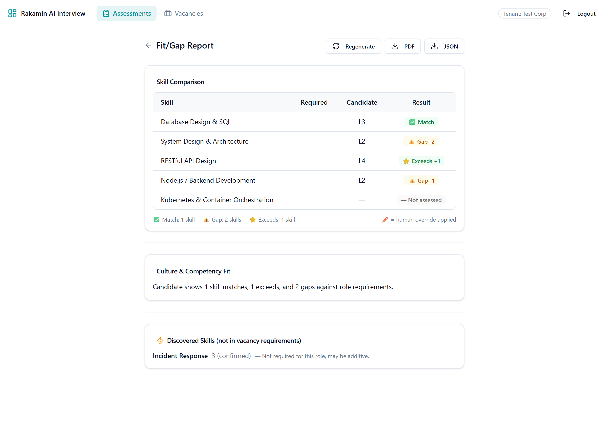
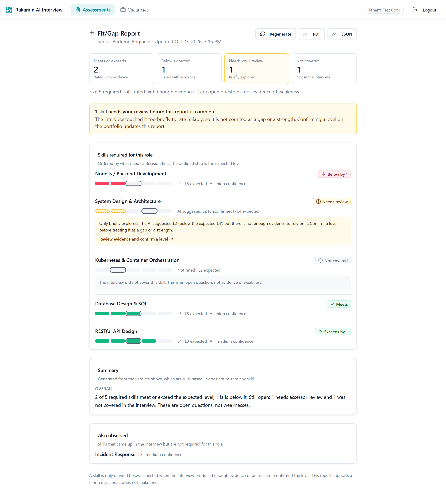
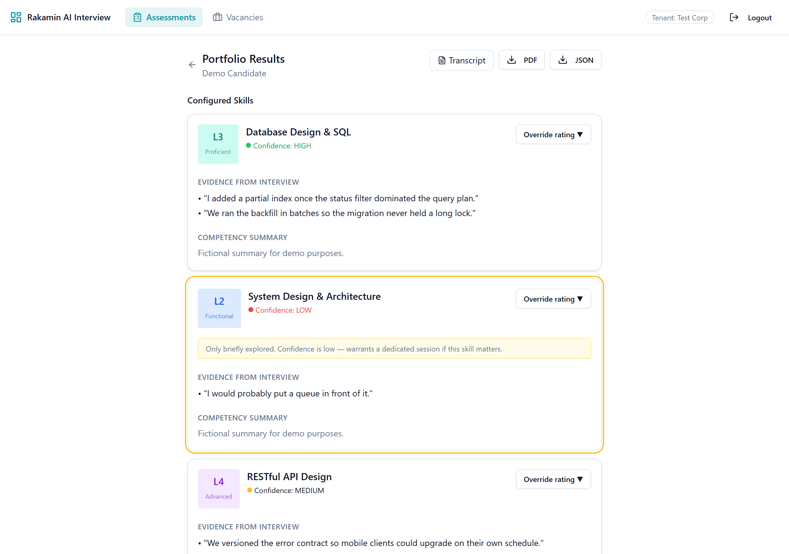
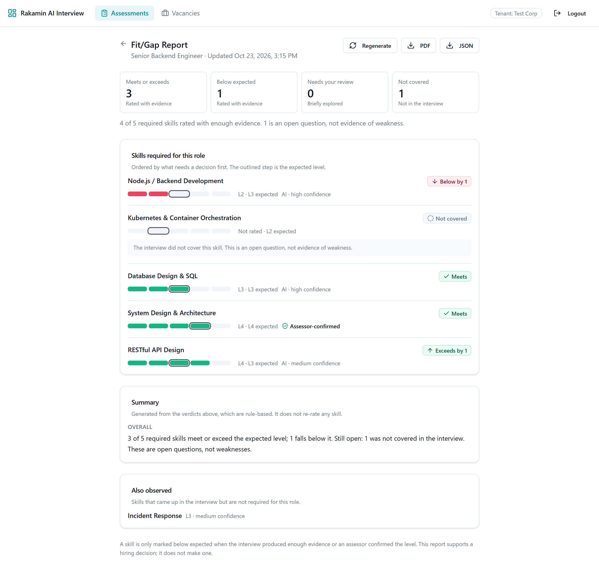
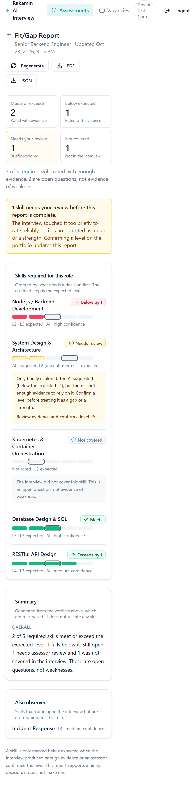
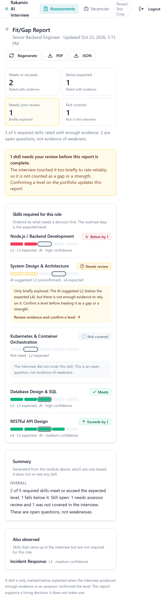
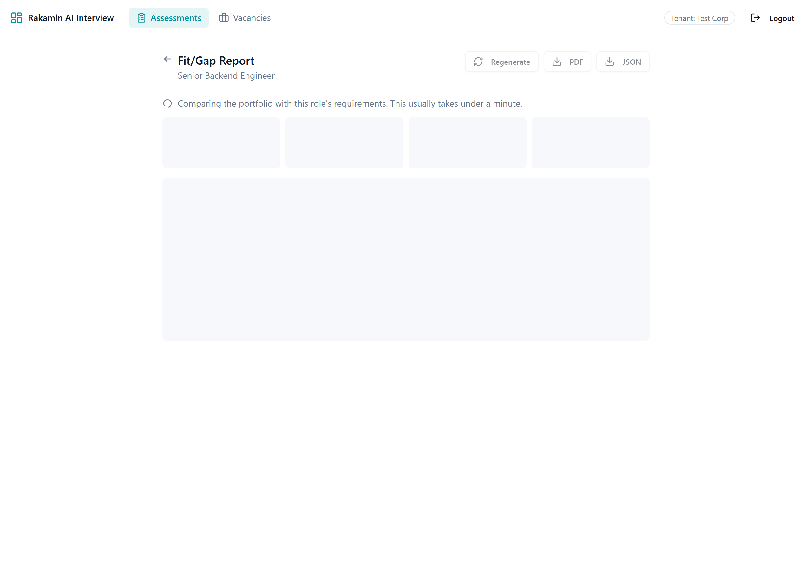
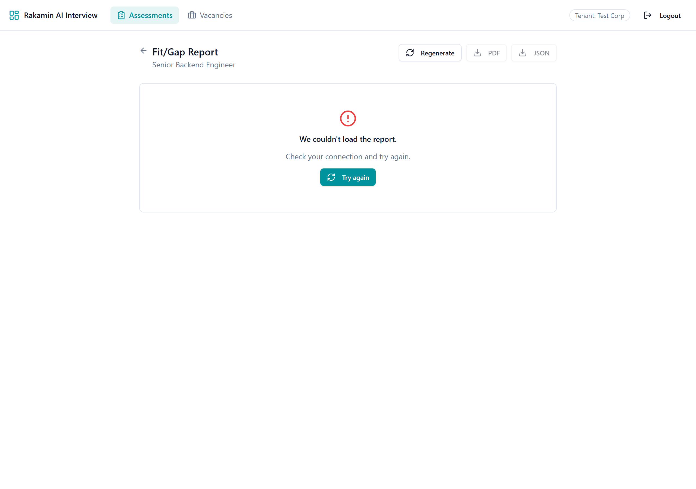
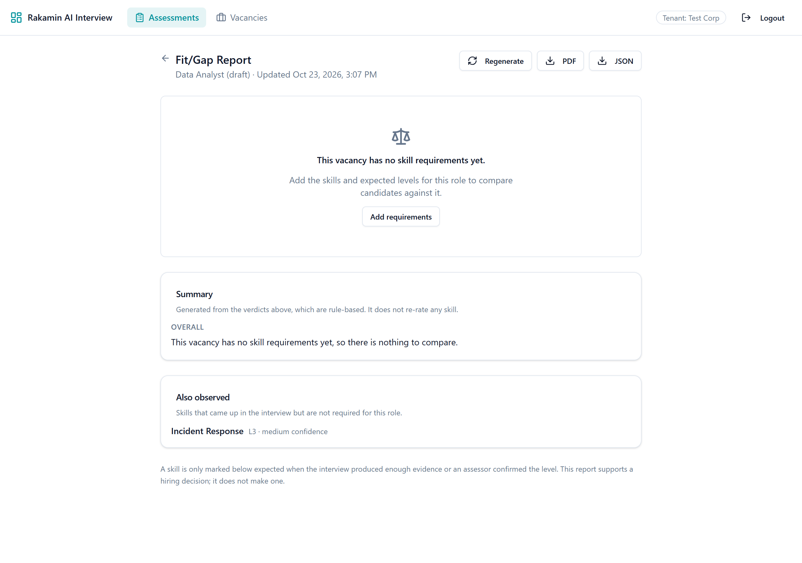

A fit/gap report that never calls a candidate weak without evidence
One feature, end to end: the platform's fit/gap verdicts now separate what the interview showed from what it never explored, and give the assessor a one-click path to resolve the difference.
1Execution journey, step by step
| Step | What I did | Output |
|---|---|---|
| 1 · Setup | Ran the Rails API, Sidekiq, PostgreSQL 16 and Redis 7 in containers, and the Vite web app locally. Branched off main. | Working stack, reproducible demo seed |
| 2 · Context | Walked the assessor flow (assessment → interview → portfolio → override → fit/gap → export), inspected DB rows and every payload behind the fit/gap screen, and framed the product around assessors, recruiters, hiring managers and the candidates it judges (§2). | Data-seam map from portfolio_skills to the React screen |
| 3 · Gap | Logged 19 findings across both services, ranked P0–P3 with a one-line impact each, and separated what this PR fixes from what I would escalate (§3). | Severity table, constraint signal |
| 4 · Decide | Chose one feature with the highest harm-to-cost ratio, compared four ways to ship it, and wrote acceptance criteria before code (§4, §5). | Option matrix, criteria table |
| 5 · Build | Test harnesses first, then comparator → rules version + migration → engine/narrative → controller/PDF → types → data hook → screen. Small commits, each with its tests. | 12 code commits |
| 6 · Prove | Seeded faults on a scratch branch, watched both suites fail, reverted, merged with --no-ff. Captured the real "before" by running main against the same data, then every state of the "after" against the running API (§7, §8). | Evidence files, screenshots |
2Product context
What the product is for
An AI voice interviewer runs a structured skills interview, tracks coverage live, and produces a skill portfolio: an L1–L5 level per skill with evidence quotes and an AI confidence. Assessors can override any level. The fit/gap report compares that portfolio with a vacancy's expected levels and is what a hiring manager actually reads, so it is where the platform's value is concentrated and where a wrong output does the most harm.
The outcome it exists for: a faster and fairer hiring decision with less interviewer time. It stays useful only while hiring teams trust its verdicts; it reaches more people only if those verdicts survive scrutiny from the candidates and regulators they affect.
Industry: hiring in Indonesia
- Very high applicant volume per opening; first-round interviews are the bottleneck, so automation is attractive and its errors scale with it.
- Psychometric and coding tests are commoditised. Structured, evidence-backed judgement at scale is not; that is the leverage, and it is only leverage if the evidence is honest.
- Interviews mix Bahasa Indonesia and English; a short or nervous answer is common and is not the same as a lack of skill.
Users and the people affected
| Who | Their day | What they need from this screen |
|---|---|---|
| Assessor | Reviews many finished sessions between other work; corrects AI ratings when the transcript shows more or less than the AI saw. | To see at a glance which ratings need their judgement, and have a correction reflected everywhere. |
| Recruiter | Moves candidates through the pipeline, compares them against vacancies, forwards results. | A report that is current and safe to export. |
| Hiring manager | Short on time; reads a summary and decides who advances. | Real strengths and real gaps, clearly separated from open questions. |
| Candidate (never chose it) | Cannot opt out and never sees the report, yet it decides whether they advance. | Not to be marked down for what the interview failed to ask. |
UU PDP (Law No. 27 of 2022) implications
| Principle | What it means here | Status |
|---|---|---|
| Accuracy of personal data processing | A low-confidence AI rating is not an accurate statement about a person. It is now shown as unconfirmed and never counted as a gap. | This PR |
| Right to object to decisions made solely by automated processing (Art. 10) | Verdicts on thin evidence now require a human confirmation before they count; the screen states the report supports, not makes, the decision. | This PR |
| Data minimisation in logs | Narrative failures now log the error class only (no model or candidate text). Broader log filtering is not in scope. | Partly |
| Confidentiality / access limitation | Portfolio and fit/gap lookups are not tenant-scoped (finding P0-1). | Escalated |
| Transparency, consent, retention | No candidate notice of AI assessment, no objection channel, no retention period for transcripts. | Escalated |
3Problem and gap analysis
Ideal condition. A hiring manager opening the report knows within seconds what the candidate is strong at, where they truly fall short, and which questions are still open, and every verdict can be traced to evidence or to a named human decision.
Gap. The comparison treated every AI level as fact. The generator's own rubric says a skill probed once is confidence: low, but the comparator ignored confidence entirely, so "we barely asked" became "they can't". The screen then hid the expected level (contract mismatch) and any override, and the exports repeated the same verdicts.
D = defective implementation, M = missing specification. Only rows on the feature's path were fixed; the rest are ranked so a lead can schedule them.
| Sev | Type | Svc | Finding and one-line impact | Status |
|---|---|---|---|---|
| P0 | D | api | Cross-tenant access. Portfolio.find / PortfolioSkill.find are not scoped to the tenant. Impact: any assessor can read, export or override another company's candidate. | Escalated |
| P0 | D | seam | Runaway jobs, endless spinner. While generating, every poll's 404 triggered a new POST and a new job (one every 5 s), with no end if the job failed. Impact: assessor blocked; queue and AI cost grow while the tab is open. | Fixed |
| P1 | M | api | Thin evidence presented as a verdict. Low-confidence AI ratings are compared like any other and become "Gap". Impact: candidates marked down for what the interview did not explore. | Fixed (core) |
| P1 | D | seam | API/UI contract mismatch. UI reads required_level/is_override; API sends expected_level and no override flag. Impact: "Required" always blank, corrections invisible (Fig. 1). | Fixed |
| P1 | D | api | PDF export fails after any override. A "→" outside Prawn's built-in font charset raises on every portfolio with an assessor override. Impact: the confirmed report cannot be shared. Found while verifying this feature. | Fixed |
| P1 | D | api | Skill matching misses. Generator prompt example ids are lowercase, taxonomy ids uppercase, label fallback is exact. Impact: assessed skills reported as not assessed. | Fixed |
| P1 | D | api | Stored verdicts never expire. Reports computed under the old rules would keep being served; editing a vacancy never invalidates a report. Impact: hiring team reads outdated verdicts. | Rules: fixed Vacancy edit: open |
| P1 | M | both | No candidate notice of AI processing, no way to contest. Impact: UU PDP exposure on every interview. | Escalated |
| P1 | D | api | Login binds the token to the first organisation when no tenant header is sent. Impact: users can get a token for the wrong tenant. | Escalated |
| P2 | D | api | Missing level stored as L1. nil.to_i.clamp(1,5) turns "no level returned" into the lowest rating. Impact: invented negative rating. Adjacent to this feature; next PR. | Open |
| P2 | D | api | Non-atomic portfolio regeneration (destroy_all then create!, no transaction). Impact: a portfolio silently missing skills. | Open |
| P2 | D | api | Raw error text persisted (generation_error = e.message), which can quote transcript content. Impact: candidate speech in API responses and logs. | Open |
| P2 | D | web | Overall recommendation hidden whenever a culture paragraph exists (culture || overall). Impact: the summary the manager needs is missing. | Fixed |
| P2 | D | api | Empty vacancy crashes the job (presence validation rejects []); duplicate requirements silently overwritten. Impact: endless spinner or a misleading row. | Fixed |
| P2 | D | api | audio_complete ends any session as all_covered given only the invite token. Impact: a cut-short interview is recorded as complete. | Escalated |
| P3 | M | both | No tests, no web test runner, no CI. Impact: every change ships unverified. | Tests CI open |
| P3 | D | web | App header overflows below 400 px (Fig. 4). Impact: cramped navigation on small phones. | Open |
| P3 | D | web | Discovered skills labelled "confirmed" for any non-low confidence. Impact: overstates certainty. | Fixed |
| P3 | D | api | Duplicate index on coverage_maps(session_id). Impact: wasted writes. | Open |
- Tenancy is enforced by convention, not construction (P0-1). Only models with
tenant_idare scoped, throughdefault_scope; child rows (portfolios, skills, reports) depend on every controller joining through a scoped parent. The quick fix is to look portfolios up throughSession; the structural fix (denormalisedtenant_idor PostgreSQL row-level security) touches the database shared with rakamin-api and needs an owner. I kept it out of this PR so the one feature stays reviewable, but it should ship before anything else. - Authentication trusts JWT claims without a user lookup and login picks the first tenant. It is shared with rakamin-api, so changing it alone could break the main product.
- Legal basis for AI interviewing (UU PDP). Notice, consent wording, the objection channel and retention periods are product and legal decisions. This feature builds the technical half (human confirmation before thin evidence counts).
- Ambiguity resolved by assumption: "insufficient evidence" means AI confidence
low, which the generator defines as ≤1 probe or stateinitiated. It is one constant (FitGap::Comparator::UNCONFIRMED_CONFIDENCE) if the business wantsmediumincluded.
4Strategy: why this one feature, and how
Choosing the feature. The brief rewards the change that makes the product better for the people it touches. I ranked candidates by harm prevented per unit of risk: tenant isolation is the most severe defect but is a security fix with little product surface; a full report lifecycle is engineering-heavy but changes nothing about what is said about a candidate. The verdict rule is the one place where a few lines of logic decide whether a real person is described as weak, so it is the feature.
| A · Relabel in the UI | B · Evidence-aware comparator + rules version (chosen) | C · Ask the LLM to judge sufficiency | D · Block report until reviewed | |
|---|---|---|---|---|
| Approach | Keep the API; the screen shows low-confidence gaps as "needs review". | Pure rule-based comparator in the API adds insufficient_evidence with a provisional_result; reports stamped with a rules version; screen, PDF, JSON and narrative all read the same verdicts. | Prompt the model to decide whether evidence is enough per skill. | Refuse to generate the report while any low-confidence skill is unconfirmed. |
| Product impact | Screen looks right, but PDF, JSON export and the AI narrative still say "gap". | One truth everywhere; assessor gets a direct path to resolve each open question. | Opaque; two runs may disagree about the same candidate. | Fair, but delays every hire on thin skills that may not matter. |
| Cost | ~0.5 day | ~2 days incl. tests | ~1 day + evaluation work | ~1.5 days |
| Maintainability | Rules duplicated in two services, drift guaranteed. | One class, one constant, one version number; bump to change rules safely. | Behaviour changes with model versions. | Simple, but a workflow lock-in. |
| Failure modes | Exports contradict the screen. | Model down → deterministic summary; legacy rows → recomputed, never shown; empty vacancy → valid empty report. | Model outage removes the safeguard itself. | Report unavailable when a portfolio is partially rated. |
| Reversibility | Trivial | Nullable column; rollback proven against a live row. | Easy | Easy |
Why B fits this codebase and deadline. The comparison was already rule-based in FitGap::Engine; B extracts it into a pure class and adds one result, so the change is small, deterministic and testable without the model. The stored-report design, Sidekiq worker and PDF export all keep working. The rules version turns "remember to invalidate old reports" into a property of the data. skill_comparisons is JSONB, so the new result needs no change to the unused fit_result PostgreSQL enum.
5Self-derived acceptance criteria
Written before the implementation; each row names the test that fails if the behaviour regresses.
| Input / condition | Correct behaviour | Proven by |
|---|---|---|
| Level =, >, < expected (confidence high/medium) | match / exceed / gap with signed delta | comparator_spec |
| AI confidence low, no override | insufficient_evidence; no candidate level, no delta; provisional_result keeps the direction; never counted as below or above | comparator_spec (2), fitGap.test, SkillVerdictRow.test |
| Assessor confirms a level | Override decides, even on a low-confidence skill; marked "Assessor-confirmed" on screen, "(assessor)" in PDF | comparator_spec, fit_gap request spec (full loop) |
| Required skill never discussed | not_assessed, explained as "not evidence of weakness" | comparator_spec, SkillVerdictRow.test |
| Skill id case differs; label spacing/case differs | Still matched | comparator_spec (2) |
| Configured and discovered skill share a name | Configured one used | comparator_spec |
| Duplicate requirement | One row, stricter expectation | comparator_spec |
| Vacancy with no requirements | Valid empty report, no model call; UI links to "Add requirements" | engine_spec, model spec, page test |
| Model timeout, error, prose instead of JSON | Report completes with a deterministic summary that names open questions | engine_spec (3) |
| Narrative prompt | Lists needs-review and not-assessed separately and forbids calling them weaknesses or naming the candidate | engine_spec |
| Report stored under older rules (incl. all pre-existing rows) | Never served or exported; POST recomputes it in place | request spec (3), engine_spec |
| Non-1252 text in AI narrative, quotes or notes; any override | PDF still renders | pdf_generator_spec (3) |
| Polling: slow, failing, stuck, left, replaced | GET-only polling every 3 s; "taking longer" after 90 s; error after 3 network failures; stops on unmount; late responses ignored | useFitGapReport.test (8) |
| Regenerate / update after override | Previous result stays visible and dimmed; export disabled until current | hook + page tests |
| Long skill names / long narrative | Names wrap; narrative clamps with "Show more" | SkillVerdictRow.test, page test, Fig. 4 |
| No token | 401 | request spec |
6What shipped
Backend (api/)
FitGap::Comparator: pure, deterministic verdict rules; rows ordered by what needs a decision (gap → needs review → not covered → meets → exceeds).- Migration
AddComparatorVersionToFitGapReports: nullable integer, no default (metadata-only change in PostgreSQL, no table rewrite). Existing rows stayNULL= legacy, so they are recomputed instead of trusted. Rollback/migrate proven against a database holding a report (assessment/evidence/migration-reversible.txt). - Engine: stamps the version; narrative prompt treats open questions as open; deterministic fallback; no model call for an empty vacancy; error class only in logs.
- Controller / exports: legacy reports are not served by GET or JSON/PDF export; POST recomputes them. PDF labels "Needs review", marks unconfirmed and assessor levels, explains open results, and no longer fails on overrides or unusual characters.
Frontend (web/)
- Types mirror the API contract (fixing the blank "Required" column and invisible overrides).
useFitGapReport: single owner of request → poll → done, replacing the loop that queued a job every 5 s.- Screen: summary tiles that count open questions apart from gaps; a review prompt; rows with an L1–L5 scale against the expected step (dashed when unconfirmed), source of the level, plain-language explanation and a "Review evidence and confirm a level" link that scrolls to and highlights the skill on the portfolio. Both narratives, "Also observed", and a closing statement that the report supports, not makes, a decision.
- States: loading, first computation, updating, taking longer, error, empty vacancy, portfolio not ready, export failure; responsive to 320 px; colour is never the only signal (icon + word on every verdict, accessible names on the level scale).
7Verification
Seeded fault test
On scratch/seeded-fault I committed one fault per service (327bf7c), ran both suites, reverted (a5ab693), re-ran, and merged with --no-ff (604eb56) so fault and revert stay visible in the PR history with a net diff of zero. Full output: assessment/evidence/.
API fault: low-confidence ratings become verdicts again - if override.nil? && unconfirmed?(skill) + if false # SEEDED FAULT 31 examples, 9 failures FitGap::Comparator ... never presents a provisional rating as a gap Fit/gap reports ... turns "needs review" into a verdict once an assessor confirms a level ... After revert: 31 examples, 0 failures
Web fault: needs-review counted as below expected
- const below = count("gap");
+ const below = count("gap", "insufficient_evidence");
× summarize > never counts a needs-review
skill as below expected
AssertionError: expected 1 to be +0
× FitGapReportPage > leads with what needs a
decision ...
Tests 4 failed | 33 passed (37)
After revert: Tests 37 passed (37)
AI verification moments
I used an AI coding assistant throughout, as leverage I verified rather than trusted. Where it was wrong or risky:
| What the AI produced | Why it was wrong | How it was caught |
|---|---|---|
A "fault injection" to prove the stale-response test was real, using a sed range command to delete the guard after getFitGap. | The command deleted a different guard (in the catch block). The test kept passing, which looked like proof the test was useless; it was the experiment that was broken. | Traced with logging inside the hook, then redid it with an exact, single-match string replacement: the test failed with expected 'Stale.' to be 'Fresh.'. Lesson: verify the fault is the one you meant before trusting what the test says. |
Model validation exclusion: { in: [nil] } to allow an empty comparison list. | Rails 7 checks array values element-wise, and [].all? is true, so the empty array was still rejected. An empty vacancy would still have crashed the job. | The engine spec for an empty vacancy failed on first run; replaced with an explicit nil check and a model spec for both cases. |
| The PDF section changes, reviewed as "label additions". | Static review missed that the existing generator already crashed on any override; the feature's main path (confirm a level, then export) was broken. | Found only by exporting from the running app; wrote three failing specs first, then fixed. Lesson: drive the real flow, not only the unit under change. |
Screenshot automation that intercepted every URL containing /fitgap to force loading and error states. | It also intercepted the page's own URL, so the "generating" capture was of a broken page. | Noticed when the error-state capture crashed; restricted interception to the API host and recaptured both states. |
8Screenshots
All data is fictional (api/db/seeds/demo_fit_gap.rb). "Before" is the unmodified main branch (API, worker and web) against the same data. Loading and error states were forced by intercepting API responses in the browser; the UI code is unchanged.









9Assumptions, deferred work, how to run
Assumptions
- AI confidence
lowis the threshold for "needs review" (the generator's own rubric). - Thin evidence should be neutral in both directions: an unconfirmed "exceeds" is not a strength either.
- Confirming the AI's own level is done with the existing override (same level); no new endpoint is needed.
- 90 s is a reasonable wait before telling the assessor a report is "taking longer" (30 s model timeout with retries plus queue latency).
Deferred on purpose (one feature, done properly)
- Tenant isolation, login tenant binding, candidate notice/consent/retention: escalated (§3).
- Invalidating reports when a vacancy is edited, and a server-side guard against duplicate jobs: the natural next step is an inputs digest on the report, using the same versioning idea as this PR.
- Generator robustness (missing level stored as L1, non-atomic writes, raw error text) and CI.
How to run
# API (Ruby 3.3.2, PostgreSQL, Redis) cd api && bundle install bundle exec rails db:create db:migrate db:seed bundle exec rails runner db/seeds/demo_fit_gap.rb # assessor@example.test / demo-password-123 bundle exec rspec # 35 examples # Web cd web && npm install && npm test && npm run typecheck # 37 tests npm run dev